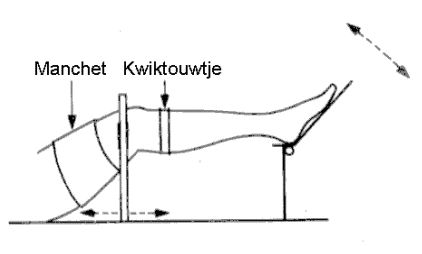
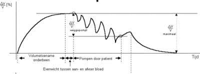
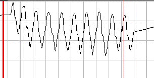
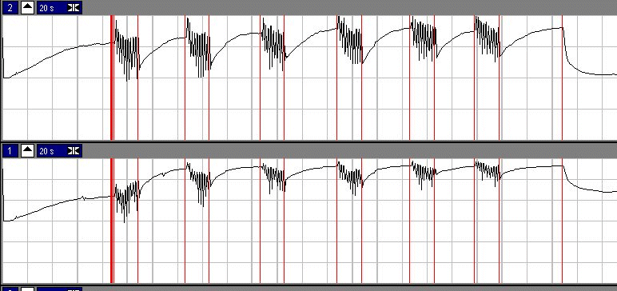
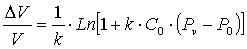
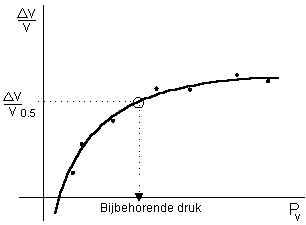

RF 2, Onset Systolische Bloeddruk
|
MIDAC REKENFUNCTIES |
MIDAC, rekenfunctie 45 |
|
|
Veneuze Pompfunctie Achtergrond Informatie |
Met de Veneuze Pomfunctie test wordt de functionaliteit van de bloed-pompfunctie in de benen gemeten. Hiermee kan de kwaliteit van de kleppen in het veneuze systeem worden bepaald.
|
De patient wordt in liggende positie gebracht, een cuf wordt om het bovenbeen geplaatst en een "kwiktouwtje" wordt net onder de knie aangebracht. (N.B. uit milieu oogpunt bevat het "kwiktouwtje" tegenwoordig geen kwik meer. |
 |
De cuf wordt snel opgeblazen tot een gedefiniëerde constante druk (lager dan diastole).
Het volume van het been zal nu langzaam toenemen, omdat bij iedere systole extra bloed in het been gepompt wordt dat niet meer terug kan stromen.
Na enige minuten zal er een evenwicht ontstaan, het volume zal immers niet verder toenemen zodra de veneuze druk gelijk is aan de cuf-druk.
Nu wordt de patiënt geïnstrueerd om 10 (20 halve) regelmatige pompbewegingen met de voet te maken.
Indien de veneuze pomp (kleppen in de venen en spieren) goed functioneert, zal extra bloed worden weggepompt uit het been, hetgeen gemeten kan worden met het "kwiktouwtje". Omdat de arteriële aanvoer ook weer op gang begint te komen, is het voor een kwantitatieve analyse van groot belang dat de pompbewegingen goed getimed zijn. Meestal wordt hiervoor dan ook de hulp van een of andere metronoom ingeroepen.
Onderstaande figuren geven een voorbeeld van een veneuze pomp meting.
|
 |
 |
|
Schematische weergave van een volledige pomp-manouvre |
Meting: het relatieve volume tijdens de pompbeweging |
De pompfunctie wordt in het algemeen bepaald bij 3 cuff-drukken. Bij ieder van deze cuff-drukken worden 2 metingen verricht om de betrouwbaarheid van de meting te vergroten. De gehele meting wordt meestal uitgevoerd aan beide benen tegelijkertijd.
In onderstaande figuur is een totaal veneuze pompmeting weergegeven.

In bovenstaande figuur worden beide benen gelijktijdig gemeten. Er zijn 6 pomp-manouvres te zien, respectievelijk bij een cuf-druk van 50, 50, 60, 60, 70, 70 mmHg. Hierna worden in aflopende volgorde de druk-volume punten bepaald.
In de onderste signaal is te zien dat bij de eerste pompbeweging, het volume stijgt, dit is te wijten aan het verschuiven van het "kwiktouwtje". Aan het eind van de meetsessie is namelijk te zien dat het volume niet meer op de oorspronkelijke waarde terugkomt.
Dus het is belangrijk om tijdens de metingen te kunnen constateren dat het "kwiktouwtje" niet verschuift. De beste manier om dit te constateren is de druk van de cuf te nemen en het nul-volume te meten. Waarschijnlijk wordt dit niet gedaan om de meting dan te lang zou duren. Wel wordt aan het eind van de meetcyclus gemeten wat het relatieve nul-druk volume is.
Dus er moet een andere manier gevonden worden om de validiteit van de meting te controleren.
Zoals onderstaand voorbeeld aangeeft, is de huidige methode niet juist.
Per meting worden de volgende parameters bepaald en opgeslagen:
Bij iedere druk wordt een meetpunt voor de druk-volume relatie bepaald:
Volumeverandering = volume vlak voor het openen van de cuffs - volume aan het einde van het leeglopen
Druk = druk vlak voor het openen van de cuffs * druk correctie factor
De druk correctie factor is noodzakelijk omdat de druk in de cuff altijd hoger is dan de druk in het veneuze systeem. Deze correctie factor is afhankelijk van de geometrie en samenstelling van het been en kan door een deskundige laborante worden ingeschat (default waarde = 0.8).
|
De druk-volume relatie wordt gefit middels de volgende formule  dV/V = gemeten volume verandering k = a-lineariteit C0 = helling (welke ?) Pv = Berekende Druk bij het volume op t=0.5 P0 = Veneuze rustdruk |
 |
Tijdens het snel leeglopen van de cuffs, kan de druk niet meer betrouwbaar worden gemeten met de drukopnemer. Vandaar dat het volume wordt gemeten en vervolgens wordt de druk bepaald uit de berkende druk-volume curve.
De pompfunctie geeft aan hoeveel druk (dus eigenlijk horizontale lijntjes i.p.v. vertikale, maar dat is historie) er is weggepompt uitgedrukt in een percentage van de begindruk. De goedgekeurde meetpunten links en rechts worden apart gemiddeld en leiden toe een afzonderlijke waarde voor de pompfunctie rechts en links.
Voor de beoordeling gelden de volgende criteria:
groter dan 60% = normale pompfunctie
40% .. 60% = gestoorde pompfunctie
kleiner dan 40% = ernstig gestoorde pompfunctie
© Copyright Instrumentele Dienst, 1999
 SM, last updated 28-08-1999
SM, last updated 28-08-1999